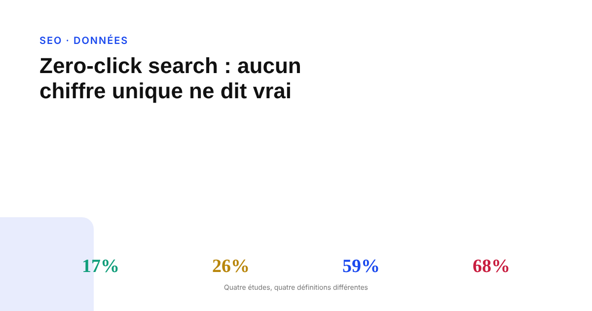
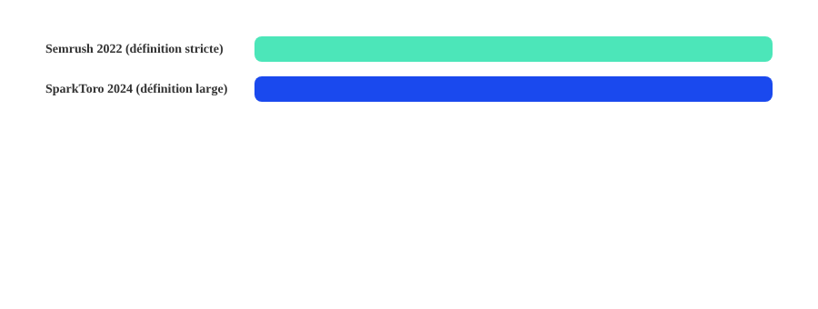

Zero-click searches : pourquoi aucun chiffre unique ne dit la vérité
Chaque étude sur les recherches sans clic avance un pourcentage différent, parfois publié par la même source à quelques mois d'écart. Le problème n'est pas que les chercheurs se trompent : c'est qu'ils ne mesurent pas tous la même chose.

Peu de statistiques marketing sont citées avec autant d'assurance, et aussi peu de constance, que le taux de « zero-click search » — la part des recherches qui se terminent sans qu'aucun site ne soit visité. Selon l'étude consultée, ce chiffre varie de moins de 20 % à plus de deux tiers des recherches. Ce grand écart n'est pas une preuve d'incompétence méthodologique : c'est la conséquence directe d'une définition qui change d'une étude à l'autre, rarement précisée dans les articles qui relaient ces chiffres.
Deux définitions très différentes, souvent confondues
Semrush, dans une étude de 2022 portant sur près de 610 000 requêtes et 20 000 panélistes américains, mesurait une recherche comme « zero-click » seulement si l'utilisateur ne cliquait sur aucun résultat et ne reformulait pas sa requête : avec cette définition stricte, le taux ressortait à environ 25,6 % sur desktop et 17,3 % sur mobile. SparkToro, avec sa méthodologie bâtie sur des données de panels de navigation (Datos), retient une définition plus large : toute session qui se termine sans clic vers un site, y compris les propriétés de Google lui-même (Maps, Images, Shopping) — avec cette définition, le taux grimpe à environ 59 % aux États-Unis et 60 % en Europe en 2024. Ce sont deux mesures légitimes, de deux phénomènes différents.
Même une seule source peut se contredire d'une publication à l'autre
Une actualisation 2026 attribuée à la même famille de sources (SparkToro/Datos) a produit des chiffres difficiles à concilier entre eux : certaines reprises citent une baisse à environ 22 %, d'autres un taux de 68 % pour la même période, tous deux présentés comme venant de « l'étude SparkToro 2026 ». L'écart suggère un changement de définition ou de panel entre les publications, plutôt qu'une évolution réelle du comportement des utilisateurs en quelques mois. SparkToro elle-même a reconnu avoir changé de fournisseur de panels au fil du temps, ce qui fragilise toute comparaison d'une année sur l'autre au sein de sa propre série de données. Google, de son côté, a publiquement qualifié la méthodologie SparkToro de trompeuse.

L'effet des AI Overviews : réel, mais mesuré par comparaison, pas par suivi dans le temps
Plusieurs analyses indépendantes observent qu'une requête affichant un AI Overview génère nettement moins de clics organiques qu'une requête comparable sans AI Overview, au même moment : une étude du Pew Research Center sur près de 900 utilisateurs américains a mesuré environ 8 % de clics organiques quand un AI Overview apparaît, contre environ 15 % sans — Google a contesté la représentativité de l'échantillon. D'autres analyses, menées par des outils SEO, rapportent des baisses de clics comparables, parfois de l'ordre de moitié. Ce sont des comparaisons « avec vs sans » prises à un instant donné, pas un suivi longitudinal de requêtes identiques sur plusieurs années : le lien de cause à effet est cohérent entre plusieurs sources indépendantes, mais la rigueur d'un avant/après véritable manque encore à ce stade.
Ce qui circule sans source traçable
Des chiffres ronds comme « 60 % des recherches sont zero-click », présentés comme un fait stable, viennent en réalité d'une mesure datée et d'une méthodologie précise, déjà contredite par les publications plus récentes de la même source. D'autres pourcentages, comme un taux de 83 % spécifiquement attribué aux requêtes avec AI Overview, circulent sur des blogs agrégateurs sans qu'aucune étude primaire ne soit identifiable derrière. La règle la plus sûre : tout chiffre qui ne renvoie pas vers Semrush, SparkToro ou Pew Research directement, avec leur méthode et leur date, doit être traité comme non vérifié.
Ce qu'il est raisonnable de dire à un client
La formulation honnête n'est pas un pourcentage unique, mais une fourchette assumée : une part importante et probablement en hausse des recherches, estimée selon la méthode entre un cinquième et deux tiers environ, se termine sans clic vers un site. Le signal le plus solide reste relatif, pas absolu : quand un AI Overview apparaît sur une requête, le clic organique chute sensiblement par rapport à la même requête sans AI Overview. L'exposition réelle dépend surtout du type de contenu : une requête informationnelle simple est bien plus exposée qu'une requête transactionnelle, de marque, ou de longue traîne. Le diagnostic utile se fait requête par requête, pas sur la base d'un chiffre global anxiogène.
FAQ
Quel est le vrai taux de recherches sans clic sur Google ?
Il n'y en a pas un seul. Les études sérieuses donnent des résultats allant d'environ 17 % à près de 60 %, selon qu'elles comptent comme un clic une visite vers une propriété Google (Maps, Images) ou qu'elles exigent en plus l'absence de reformulation de la requête. Toute statistique isolée sans précision de méthode doit être prise avec prudence.
Les AI Overviews ont-ils prouvé qu'ils font baisser le trafic organique ?
Les données disponibles sont corrélationnelles, pas une vraie étude longitudinale avant/après sur un même ensemble de requêtes suivi dans le temps. Plusieurs analyses indépendantes observent un taux de clic organique sensiblement plus faible quand un AI Overview apparaît sur une requête, comparé à une requête similaire sans AI Overview au même moment — un signal cohérent, mais qui ne prouve pas à lui seul une tendance continue dans le temps.
Faut-il abandonner le SEO à cause des recherches sans clic ?
Non. L'exposition au zero-click varie fortement selon le type de requête : les requêtes informationnelles simples sont les plus touchées, les requêtes transactionnelles, de marque et de longue traîne restent nettement plus génératrices de clics. Le diagnostic doit se faire au niveau du type de contenu, pas sur la base d'un chiffre global anxiogène.
Envie de savoir quelles de vos pages sont vraiment exposées au zero-click ?
Pour aller plus loin, voir la page SEO, et l'article L'impact réel des AI Overviews de Google sur votre trafic SEO.
Pour continuer sur ce sujet.